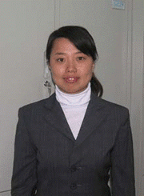

风雨过后定是彩虹
尊敬的各位老师、同学们：
大家好!
我叫王宇。来自美术学院2003级装潢系，今天很荣幸向各位老师和同学道出我由来已久的感慨，今天我汇报的题目是“风雨过后定是彩虹”。
小的时候我愿意趴在窗台上看雨后的彩虹，因为那是一场风雨交加的胜利品。我爱彩虹。更爱与暴风雨做斗争的过程。
我出生于一个农村家庭，家里共有6口人，爸爸妈妈都是农民，还有3个妹妹。家里的孩子多，地少。每到过年，本来应该是高兴的日
大家好!
我叫王宇。来自美术学院2003级装潢系，今天很荣幸向各位老师和同学道出我由来已久的感慨，今天我汇报的题目是“风雨过后定是彩虹”。
小的时候我愿意趴在窗台上看雨后的彩虹，因为那是一场风雨交加的胜利品。我爱彩虹。更爱与暴风雨做斗争的过程。
我出生于一个农村家庭，家里共有6口人，爸爸妈妈都是农民，还有3个妹妹。家里的孩子多，地少。每到过年，本来应该是高兴的日
子，我家却在为各种生活费用而犯愁。于是平日里，爸爸妈妈非常节俭，我们姐几个的衣服都是“老大穿完，老二穿，缝缝补补又三年”。父母为了我们更是卖力干活，想尽办法赚钱供我们上学。收粮食，割柴禾卖钱，卖青菜等。
由于爸爸妈妈过于劳累，妈妈早早的患上了脑血栓和心脏病，肺病等。有时候她就会卧床不起，每每看到生病的妈妈，我都劝她去看病，她总是以止疼片等来搪塞我，我心里明白，她不愿意看病，是为了节省钱给我们上学。为了让我们过好日子。爸爸承包了一晌地，还赊帐买了拖拉机托运煤砖等。眼看家里生活就要有好转，但是命运不会眷顾贫穷。那是1996年，爸爸出事了，他开着拖拉机在拉运的路上，正走在火车道的岔路口，因为茂密的树林挡住了火车，爸爸的车恰好和火车撞在了一起，拖拉机变成了一堆废铁，就在这次车祸中，爸爸的腿大伤，从此就再也干不了重活，为了给爸爸看病，同时还要赔偿铁路一大笔钱，家里负债累累。这些经历，给我的童年抹上了重重的阴影，小的时候我就时常告诉自己要努力学习，我的学习一直都很优异，并多次获得“三好学生”等称号。
考虑到上大学还要很多钱，我考了松原师范学院，那年我16岁，上学后，我就一直以打扫楼道、看凉衣场等勤工俭学的办法来支付自己的全部生活费用。记得那是一个暑假，我放假回来，回到家里，没有看到妈妈，爸爸说妈妈到离家15里地的草原上放大鹅，已经25天没有回来了，我放下书包，决定看妈妈，当我到了草原，远远的就看到一个瘦小的身影，她是那样的黑瘦，我扑在妈妈的怀里，我不相信自己的眼睛，那是妈妈吗？比我放假前瘦了10几斤，妈妈的脸是那样的黑黝，她看到我笑开了花，露出了她那洁白的牙齿，泪如泉涌。
一直以来家里生活的都很拮据，我们姐几个更是努力学习，为了战胜生活的困难，我们几个在放假时，卖过鞭炮、对联、还卖过文具等。爸爸自从出了车祸，就开始了收废品，寒来暑往，尽管他的腿不好，他不甘于在家呆着，一直是那样的忙碌，想到他我就心疼。在中师上学时，我成了家里的脊柱，担负着家庭的全部责任，想到仅仅具有中专学历还是不能够让爸妈过上好日子的，2002年我想到了考大学，听说可以办理绿色通道，2003年我考进了东北师范大学美术学院。上大学了，村子里一下子沸腾了，因为我是第一个重点大学的大学生。家里也是特别高兴，但在这些高兴的背后是爸妈的愁眉不展，因为家里没有钱供我上学，东借西借，借到了一千元，这是我上大学爸妈给我拿的第一笔钱，也是最后的一笔钱。上大学了，我开始了新的征程，我就给自己树下了三个目标“生活中自立，学习上优秀，能力上出众”，为了这几个目标，我一步一步的迈进。
我开始了自食其力的生活。每次吃饭都精打细算，花钱上很仔细，能不用的都不用。为了生活，我充分的利用了课余时间，做家教，做辅导班老师、发传单、做促销员、卖牛奶等。在各种经历中我有太多的记不清，记不清多少次在瑟瑟的寒风中，举着我要做家教的牌子；记不清多少次发送传单时，路旁行人无奈的眼神；记不清多少次为了做方便面的产品调查，我的嗓子沙哑，脚被磨破。生活中有多少苦，我都不怕，为的是坚持。所以在每个假期里，我坚持为家里的53名初中生补习文化课，一做就是五个假期。五个假期，我把所有的时间与心思都用在了辅导上。认真、耐心、负责是我的工作态度，因为我没有对不起孩子们，每到开学前，总会有家长了解我的情况，为我送上下学期生活的费用。我感谢他们，教学更是卖力。53名学生在今年的中考中100%考上了高中，今年是我们村升学率最高的一年，我也因此而高兴。我用自己的知识换来了这么多孩子的未来，我也感谢他们，是他们的家长为我解决了生活的燃眉之急。上学已经3年了，我没有再开口和爸妈要过钱，每次他们总是问我“钱够不够花”我总是很高兴的说： “我够花”。就在我大三的上学期里，家里又有了变动，三妹妹得了癫痫病，初中二年级的她，对学习是那样向往，对未来是那样的憧憬，但时常的病情发作，耽误了她正常的学习，家里为了给她治病，走了很多地方，借了很多钱，我偷偷的将我的生活费减到最少，将剩下的钱寄给妹妹。我的生活再次陷进了困境，我更加忙碌于生活费用的奔波上，热心的辅导员给我申请了国家助学金，解决了我的困难。我深深明白，我能够走到今天是学校为我们提供了这么多的渠道，才让我能够走好大学3年的生活学习。
在生活中我做到了自立，但是我还有两个目标，我一直谨记自己的目标，生活的苦难更加坚定了我要努力学习的决心，三年中，我一直将学习作为我的主要职责。在专业学习中，我要求自己做到认真与仔细，别人交一份作业，我要交两份，甚至更多，由于我学习的是平面设计专业，多参加实践是最好的学习方式。在“全国第八届少数民族运动会”会徽设计中，由我设计的作品获得纪念奖，在“2006海峡两岸大学生夏令营”会徽设计中荣获一等奖，设计了第32届校学生会会标，团委网站，大学生艺术团汇演海报，节目单等。在实践中，我提升了专业水平，得到了锻炼。因为每个假期都要教授学生文化课，因此我将文化课学习做得与专业一样重要。平时，认真做笔记，向老师请教，查阅资料。终于功夫不负有心人，三年学习中，全院135名学生中，我取得了综合排名第一，专业排名第四的成绩。连续三年获得“校长奖学金”“优秀学生”称号，并且获得一次“国家二等奖学金”，“教师技能奖学金”等。
大学的生活是丰富多彩的， 在大学三年中，为了提高我的综合能力，我一直做学生干部，由年级的生活副部到团委秘书长，再到净月校区宣传部部长等职务，工作中，我一直一丝不苟，认真做好为同学服务的角色，并不断的创新工作思路，开创了“共绘东师”等系列宣传活动，积极策划参加各种学生活动数十场。在我的生活中，除了学习、供养自己。我将所有的心思用到了学生工作，在不同的工作岗位中，我一直默默无闻，做好我的本职工作。学生会、团委是我的家，在这个家里，我感受着温暖，并且提升了各方面的工作能力，我热爱这样的团体，我没有后悔过3年的课余时间都在这里度过，我没有后悔过，在别人都在休闲的时候，我却在为筹办活动忙的不可开交；我没有后悔过，在别人还在睡梦中，我还在昏暗的灯光下写着计划书，我没有怨言。我收获了，我具备了各种能力，我欢喜、我雀跃。在几年里我连续几年被授予“五四优秀团员”“优秀团干部”“优秀校学生干部”“社会工作奖学金”等。
生活中有着这样那样的挫折和困难，应该是人生乐章的高潮与低谷，生活中有了这样的旋律才更加和谐。虽然我的生活境况一直是在困难的低谷徘徊，但经过这几年大学生活的历练，我开始懂得生活不会眷恋天下可怜的人们，只会垂青于敢于挣扎与拼搏的人们。现今，大四的我，回想当时因为生活的困惑而偷偷流泪，因为战胜困难而沾沾自喜，这样那样的生活经历使我更加成熟，在生活的困惑中，我想做好工作与学习是我的大学最好的回报。
2006年10月，我被保送为2+3研究生，这又是我人生另一个起点，三年里，我向着我的三个目标不断的迈进，我不知道这算不算成功，但至少是我努力的一种证明。一直以来，我没有畏惧困难，我没有向生活屈服。在大学的生活中，东师给予我宽泛的发展空间，给予我坚不可摧的性格，正如那句话语所说：“我饮东师一滴水，我献祖国一片情”。几年里，学校给予我太多的关怀，亲人们给予我太多的关爱，而我唯一可以做的就是用实际行动来回报我的母校和我的亲人。现今，我还要面临更多的挑战与艰辛，但是我想有了几年的经历与成长，我会走得更好，因为我一直相信：“暴风雨过后定是七色的彩虹”。
由于爸爸妈妈过于劳累，妈妈早早的患上了脑血栓和心脏病，肺病等。有时候她就会卧床不起，每每看到生病的妈妈，我都劝她去看病，她总是以止疼片等来搪塞我，我心里明白，她不愿意看病，是为了节省钱给我们上学。为了让我们过好日子。爸爸承包了一晌地，还赊帐买了拖拉机托运煤砖等。眼看家里生活就要有好转，但是命运不会眷顾贫穷。那是1996年，爸爸出事了，他开着拖拉机在拉运的路上，正走在火车道的岔路口，因为茂密的树林挡住了火车，爸爸的车恰好和火车撞在了一起，拖拉机变成了一堆废铁，就在这次车祸中，爸爸的腿大伤，从此就再也干不了重活，为了给爸爸看病，同时还要赔偿铁路一大笔钱，家里负债累累。这些经历，给我的童年抹上了重重的阴影，小的时候我就时常告诉自己要努力学习，我的学习一直都很优异，并多次获得“三好学生”等称号。
考虑到上大学还要很多钱，我考了松原师范学院，那年我16岁，上学后，我就一直以打扫楼道、看凉衣场等勤工俭学的办法来支付自己的全部生活费用。记得那是一个暑假，我放假回来，回到家里，没有看到妈妈，爸爸说妈妈到离家15里地的草原上放大鹅，已经25天没有回来了，我放下书包，决定看妈妈，当我到了草原，远远的就看到一个瘦小的身影，她是那样的黑瘦，我扑在妈妈的怀里，我不相信自己的眼睛，那是妈妈吗？比我放假前瘦了10几斤，妈妈的脸是那样的黑黝，她看到我笑开了花，露出了她那洁白的牙齿，泪如泉涌。
一直以来家里生活的都很拮据，我们姐几个更是努力学习，为了战胜生活的困难，我们几个在放假时，卖过鞭炮、对联、还卖过文具等。爸爸自从出了车祸，就开始了收废品，寒来暑往，尽管他的腿不好，他不甘于在家呆着，一直是那样的忙碌，想到他我就心疼。在中师上学时，我成了家里的脊柱，担负着家庭的全部责任，想到仅仅具有中专学历还是不能够让爸妈过上好日子的，2002年我想到了考大学，听说可以办理绿色通道，2003年我考进了东北师范大学美术学院。上大学了，村子里一下子沸腾了，因为我是第一个重点大学的大学生。家里也是特别高兴，但在这些高兴的背后是爸妈的愁眉不展，因为家里没有钱供我上学，东借西借，借到了一千元，这是我上大学爸妈给我拿的第一笔钱，也是最后的一笔钱。上大学了，我开始了新的征程，我就给自己树下了三个目标“生活中自立，学习上优秀，能力上出众”，为了这几个目标，我一步一步的迈进。
我开始了自食其力的生活。每次吃饭都精打细算，花钱上很仔细，能不用的都不用。为了生活，我充分的利用了课余时间，做家教，做辅导班老师、发传单、做促销员、卖牛奶等。在各种经历中我有太多的记不清，记不清多少次在瑟瑟的寒风中，举着我要做家教的牌子；记不清多少次发送传单时，路旁行人无奈的眼神；记不清多少次为了做方便面的产品调查，我的嗓子沙哑，脚被磨破。生活中有多少苦，我都不怕，为的是坚持。所以在每个假期里，我坚持为家里的53名初中生补习文化课，一做就是五个假期。五个假期，我把所有的时间与心思都用在了辅导上。认真、耐心、负责是我的工作态度，因为我没有对不起孩子们，每到开学前，总会有家长了解我的情况，为我送上下学期生活的费用。我感谢他们，教学更是卖力。53名学生在今年的中考中100%考上了高中，今年是我们村升学率最高的一年，我也因此而高兴。我用自己的知识换来了这么多孩子的未来，我也感谢他们，是他们的家长为我解决了生活的燃眉之急。上学已经3年了，我没有再开口和爸妈要过钱，每次他们总是问我“钱够不够花”我总是很高兴的说： “我够花”。就在我大三的上学期里，家里又有了变动，三妹妹得了癫痫病，初中二年级的她，对学习是那样向往，对未来是那样的憧憬，但时常的病情发作，耽误了她正常的学习，家里为了给她治病，走了很多地方，借了很多钱，我偷偷的将我的生活费减到最少，将剩下的钱寄给妹妹。我的生活再次陷进了困境，我更加忙碌于生活费用的奔波上，热心的辅导员给我申请了国家助学金，解决了我的困难。我深深明白，我能够走到今天是学校为我们提供了这么多的渠道，才让我能够走好大学3年的生活学习。
在生活中我做到了自立，但是我还有两个目标，我一直谨记自己的目标，生活的苦难更加坚定了我要努力学习的决心，三年中，我一直将学习作为我的主要职责。在专业学习中，我要求自己做到认真与仔细，别人交一份作业，我要交两份，甚至更多，由于我学习的是平面设计专业，多参加实践是最好的学习方式。在“全国第八届少数民族运动会”会徽设计中，由我设计的作品获得纪念奖，在“2006海峡两岸大学生夏令营”会徽设计中荣获一等奖，设计了第32届校学生会会标，团委网站，大学生艺术团汇演海报，节目单等。在实践中，我提升了专业水平，得到了锻炼。因为每个假期都要教授学生文化课，因此我将文化课学习做得与专业一样重要。平时，认真做笔记，向老师请教，查阅资料。终于功夫不负有心人，三年学习中，全院135名学生中，我取得了综合排名第一，专业排名第四的成绩。连续三年获得“校长奖学金”“优秀学生”称号，并且获得一次“国家二等奖学金”，“教师技能奖学金”等。
大学的生活是丰富多彩的， 在大学三年中，为了提高我的综合能力，我一直做学生干部，由年级的生活副部到团委秘书长，再到净月校区宣传部部长等职务，工作中，我一直一丝不苟，认真做好为同学服务的角色，并不断的创新工作思路，开创了“共绘东师”等系列宣传活动，积极策划参加各种学生活动数十场。在我的生活中，除了学习、供养自己。我将所有的心思用到了学生工作，在不同的工作岗位中，我一直默默无闻，做好我的本职工作。学生会、团委是我的家，在这个家里，我感受着温暖，并且提升了各方面的工作能力，我热爱这样的团体，我没有后悔过3年的课余时间都在这里度过，我没有后悔过，在别人都在休闲的时候，我却在为筹办活动忙的不可开交；我没有后悔过，在别人还在睡梦中，我还在昏暗的灯光下写着计划书，我没有怨言。我收获了，我具备了各种能力，我欢喜、我雀跃。在几年里我连续几年被授予“五四优秀团员”“优秀团干部”“优秀校学生干部”“社会工作奖学金”等。
生活中有着这样那样的挫折和困难，应该是人生乐章的高潮与低谷，生活中有了这样的旋律才更加和谐。虽然我的生活境况一直是在困难的低谷徘徊，但经过这几年大学生活的历练，我开始懂得生活不会眷恋天下可怜的人们，只会垂青于敢于挣扎与拼搏的人们。现今，大四的我，回想当时因为生活的困惑而偷偷流泪，因为战胜困难而沾沾自喜，这样那样的生活经历使我更加成熟，在生活的困惑中，我想做好工作与学习是我的大学最好的回报。
2006年10月，我被保送为2+3研究生，这又是我人生另一个起点，三年里，我向着我的三个目标不断的迈进，我不知道这算不算成功，但至少是我努力的一种证明。一直以来，我没有畏惧困难，我没有向生活屈服。在大学的生活中，东师给予我宽泛的发展空间，给予我坚不可摧的性格，正如那句话语所说：“我饮东师一滴水，我献祖国一片情”。几年里，学校给予我太多的关怀，亲人们给予我太多的关爱，而我唯一可以做的就是用实际行动来回报我的母校和我的亲人。现今，我还要面临更多的挑战与艰辛，但是我想有了几年的经历与成长，我会走得更好，因为我一直相信：“暴风雨过后定是七色的彩虹”。